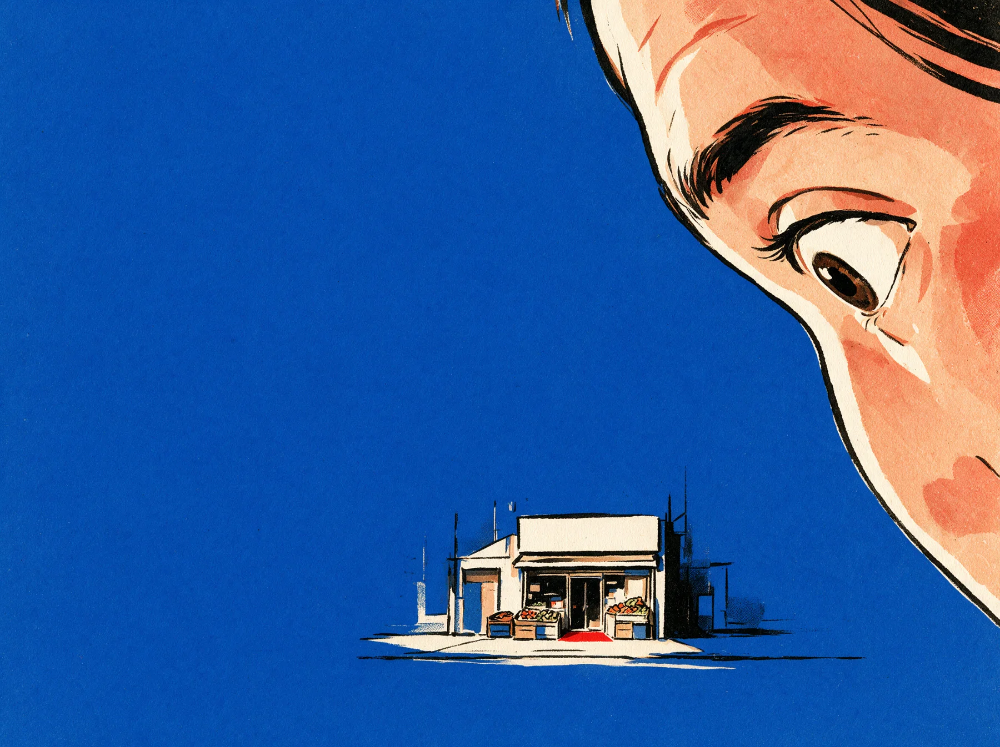

The kids don’t want the store. They want the brand.
Read the thought
Illustration slot — succession
16:10 · bleeds off the right edge


Attention Demand Revenue
STIR builds the content, strategy and systems that turn attention into demand — and demand into revenue.
01 — Attention
02 / Thesis
They need something worth talking about.
The interesting part is usually already there. We find it, build the story around it, put it in front of the right people and give them a reason to act.
10M+
Organic views
We didn’t invent Labay’s story. We built the system that helped more people see it.
04 / What we do
We make the work, put it in front of the right people and build the system that turns their attention into business. More calls. More orders. More bookings. More customers.
05 / Observation
There’s probably something inside your business people would care about. Let’s find it.
Tell us about the business